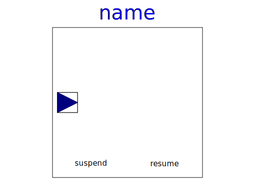

| Name |
Description |
 TankController TankController |
Controller for tank system |
|  MakeProduct |
State machine defining the time instants when to fill or empty
a tank |
| Inflow1 |
Inflow connector (this is a copy from Isolde Dressler's master
thesis project) |
| Inflow2 |
Inflow connector (this is a copy from Isolde Dressler's master
thesis project) |
| Outflow1 |
Outflow connector (this is a copy from Isolde Dressler's master
thesis project) |
| Outflow2 |
Outflow connector (this is a copy from Isolde Dressler's master
thesis project) |
 valve valve |
Simple valve model (this is a copy from Isolde Dressler's
master thesis project) |
 Tank Tank |
Simple tank model (this is a copy from Isolde Dressler's master
thesis project) |
 Source Source |
Simple source model (this is a copy from Isolde Dressler's
master thesis project) |
 CompositeStep CompositeStep |
State machine demonstrating a composite step (used in
StateGraph.Examples.ShowCompositeStep) |
| CompositeStep1 |
Composite step used to demonstrate exceptions (in
StateGraph.Examples.ShowExceptions) |
| CompositeStep2 |
Composite step used to demonstrate exceptions (in
StateGraph.Examples.ShowExceptions) |